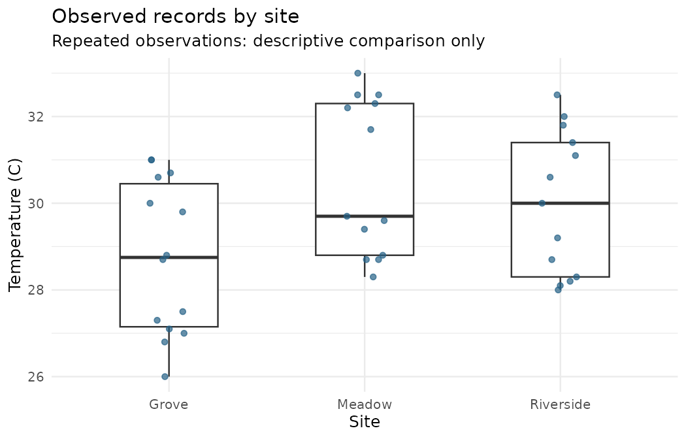
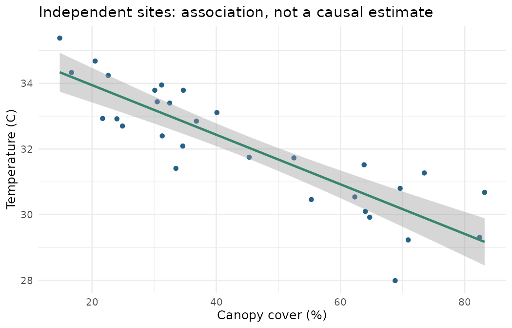

第 35 节 · 成果展厅
把图和证据放进同一份报告
别人能从一句结论找到它的依据吗？
核对自动生成的图表、效应、区间和报告措辞。
本节目录
运行位置：打开练习包内的 r-lab.Rproj，在项目根目录运行本节脚本。安装与准备见第 02—04 节；第 13 节说明扩展包。
报告按问题组织
完整流程已经生成观察分布图、横断面回归图，以及一份 Markdown 简报。报告的组织顺序是问题、数据设计、处理、结果和限制；读者不必跟着每一次控制台操作才能知道发生了什么。
# 数据调查小镇 · 第 35 节
# 在 r-lab 项目根目录运行；输出只写入 results。
source("scripts/analyse.R")
result <- analyse_records("data/observations.csv", "results/first-week")
cat(readLines("results/first-week/report.md", encoding = "UTF-8"), sep = "
")# 数据调查小镇 · 分析简报 全部输入均为原创模拟教学数据，不代表真实研究结论。 ## 观察记录 输入 observations.csv。原始 43 行；删除 1 条完全相同的重复导入后剩 42 行，其中温度缺失 2 条。 均值只使用有温度的记录；汇总表同时保留记录数与有效数。同一地点重复测量，因此这里只做描述，不把行数当作独立地点数。 ## 随机分组的独立装置实验 A、B 各 24、24 个独立装置；预先比较降温量 B−A。Welch 双侧比较估计差值 0.878 °C，95% 置信区间 [0.386, 1.370] °C，p <0.001。 每个装置随机分组且只贡献一次结果。结论以独立性、连续测量及均值推断的近似条件为前提；效应和区间比一个显著性标签包含更多信息。 ## 地点级横断面资料 另有 30 个地点，各记录一次。冠层覆盖每增加 1 个百分点，模型预测的平均温度改变 -0.0756 °C；斜率 95% 区间 [-0.0920, -0.0591]。 这里报告关联，不排除其他变量的影响。解释前检查残差的形状与离散程度；避免超出已有冠层覆盖范围外推。 ## 如何复现 在 r-lab 项目中运行 scripts/analyse.R 定义函数，再用本批输入路径调用 analyse_records()。包与 R 版本见 session-info.txt。 更换观察表只更新观察部分；固定的实验与横断面数据不会因此变成新的研究。
上面的文字由当前输入和脚本实际生成，均值差、置信区间与斜率都来自运算结果。你可以在 results/first-week/report.md 找到同一份简报，而不是只拿到网页中的一段不可追溯文字。
R 实际生成 · 一周记录的地点分布

每点表示一条已知温度记录。地点内反复测量，因此本图用于描述，不能直接视作独立地点组间检验。
放大查看 ↗ · 下载图片 ↓R 实际生成 · 独立地点的拟合关联

30 个地点各观察一次。曲线为一元线性回归拟合，阴影为模型平均响应的区间；不能把阴影当作所有个体的预测范围。
放大查看 ↗ · 下载图片 ↓三个部分采用不同强度的措辞
重复地点记录只做描述，说明日期、缺失与重复处理；随机分组模拟实验报告两组降温差、区间和 p 值，并陈述条件；横断面部分报告关联及斜率，保留混杂和模型诊断的限制。
不要用“证明显著有效”替代效应和区间。结果来自模拟教学数据，因此不能作为现实材料选择或城市治理的研究证据。这个标注应随图片和文字一起被带走。
每个数字都能沿线索回去
看到一个均值，能找到用了哪些记录及有效数；看到一个区间，能找到对应的估计目标与方法；看到一个模型斜率，能找到变量单位、数据范围和诊断。你不必把全部代码塞进报告正文，但应该提供对应脚本与数据入口。
区分生成与解释
自动报告可以减少复制数字时的错误，不能替你判断研究问题和方法是否合适。打开第 32 节的残差图，再检查本报告的回归解释；确认问题、采样设计和输出没有被混用。
本节不要求安装额外的排版系统。Markdown 简报可以直接阅读；后续如果需要动态文档，可以再学习 Quarto。先把输入、代码、结果和解释对应起来，比增加一种排版工具更基础。
动手试试
追溯一项结论
从报告中选出 B−A 的差值，指出输入文件、观察单位和计算函数。
给我一点提示
把一句结果拆成数据、设计与方法。
查看参考解法与解释
输入是 shade_trial.csv；每个独立装置贡献一次降温结果；方法是 t.test(b, a, var.equal = FALSE) 的双侧 Welch 比较，报告方向为 B−A。
带走这一点
简报中的数字应来自计算，文字要同时交代设计、效应、不确定性与限制。最后一节换入新的观察表，检查流程能否重新运行，以及哪些结论需要更新、哪些输入并未改变。
检查一下理解
自动生成报告后，还需要做什么？
查看解释
自动生成减少抄录错误，不能自动保证统计解释成立。